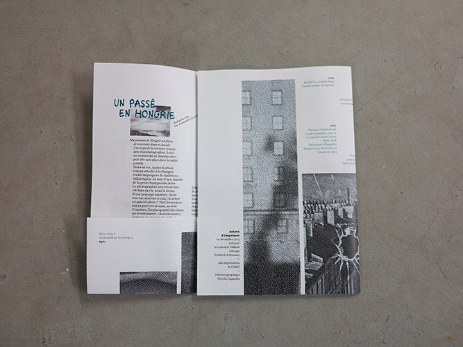
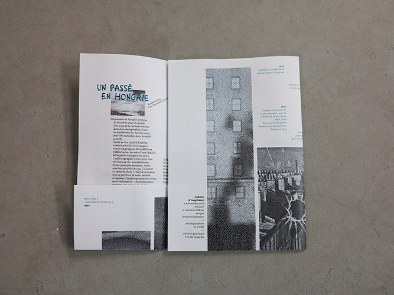

Identité
André Kertész
Exposition monographique du photographe André Kertész au Jeu de Paume, du 28/09/2010
au 06/02/2011.
L'identité de cette exposition est basée sur un monogramme déformé et un caractère de titrage dessiné à la main.
Affiche 70 x 100 cm
Dépliant A3
2013


 
